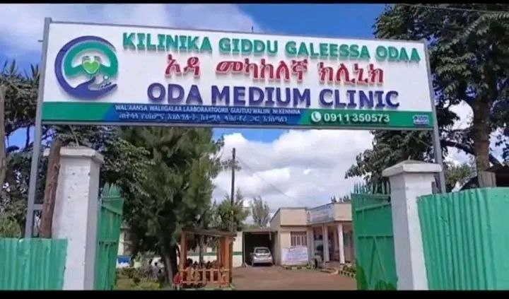
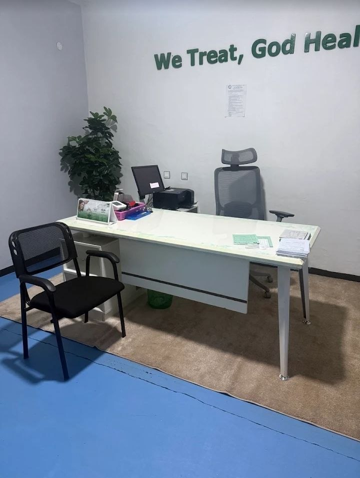

Compassionate Care | Advanced Medicine | Better Health

ODAA Medium Clinic is a premier healthcare facility located in Woliso Town, Southwest Shoa Zone, Oromia Region. We are dedicated to providing compassionate, advanced medical care to our community.
Under the leadership of Dr. Tadele Mulisa, we combine modern medical technology with personalized patient care to ensure the best health outcomes for every patient.
To deliver accessible, high-quality healthcare services that improve the health and well-being of our community.
To be the leading healthcare provider in Woliso, recognized for excellence in patient care and medical innovation.
Executive Director, ODAA Medium Clinic

Dr. Tadele Mulisa is a highly experienced medical professional with a deep commitment to improving healthcare in the Woliso community. As the Executive Director of ODAA Medium Clinic, he leads a team of dedicated healthcare professionals.
Our team consists of skilled medical professionals dedicated to your health and well-being.
We use advanced diagnostic equipment including 4D ultrasound and comprehensive laboratory services.
We treat every patient with dignity, respect, and personalized attention.
Our doors are always open for emergencies, ensuring you get care when you need it most.
We serve patients in English, Amharic, and Afan Oromo for better communication.
Quality medical care shouldn't be expensive. We offer competitive rates for all services.